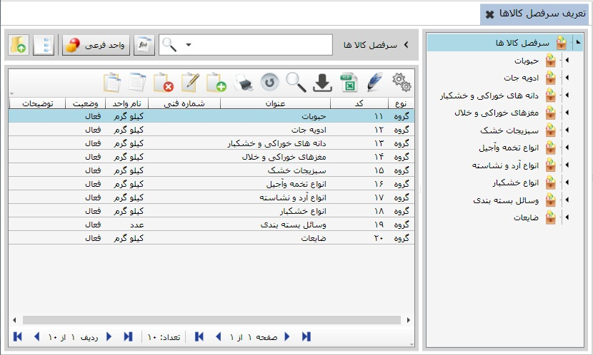
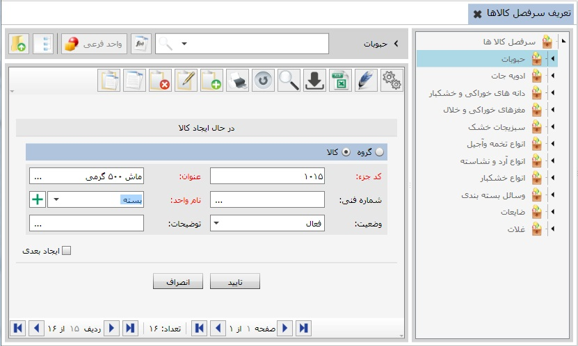

برای معرفی کالاها گزینه تعریف سر فصل کالاها را انتخاب کنید، تصویر زیر باز می شود:
در شکل بالا سرفصل کالاهای یک واحد صنعتی و بسته بندی را مشاهده می نمایید. در کادر سمت چپ گروه های کالا ها و زیر گروه های مربوط به آنها که قبلا ایجاد شده اند به صورت درختی دیده می شوند. برای ایجاد گروه کالای جدید گزینه اضافه را از نوار ابزار بالای جدول انتخاب کنید ، تصویر زیر نمایان می شود:

برای مثال در این جا گزینه « گروه» را انتخاب کرده و سپس در قسمت عنوان « غلات» را وارد می کنیم و واحد گروه را واحدی انتخاب می کنیم که واحد معمول برای کالاهای آن گروه باشد. آنگاه با زدن گزینه تایید گروه « غلات» ایجاد و به لیست گروه های کالا اضافه خواهد شد.

به طور مشابه می توان کالا های مورد نیاز را درون گروه های مربوط ایجاد کرد. گروهی را که می خواهید در آن کالا تعریف کنید را از نمودار درختی انتخاب کنید سپس گزینه اضافه (f8) را بزنید و با تکمیل فرم مربوط به آن و زدن کلید تایید کار را به پایان برسانید. فرم تعریف کالا نیز مانند فرم تعریف گروه کالا می باشد لذا کافی است برای تعریف کالا در فرم ایجاد کالا، به جای گزینه « گروه» گزینه « کالا» را انتخاب کنید.

اگر قبلا واحد مربوط به کالایی را که در حال تعریف آن هستید تعریف نکرده باشید، می توانید با استفاده از گزینه
 در کنار فیلد نام واحد به صورت همزمان واحد مورد نظر را ایجاد کنید .
در کنار فیلد نام واحد به صورت همزمان واحد مورد نظر را ایجاد کنید .
شکل زیر کالاهای تعریف شده در گروه کالای « حبوبات» را نشان می دهد.

در بالای تمامی صفحات مربوط به تعریف سرفصل کالاها، چند آیکن وجود دارد که به توضیح کاربرد هر یک می پردازیم:
 برگشت به قبلی (Back): در هر صفحه ای از تعریف سرفصل کالاها قرار داشته باشید، برای برگشت به صفحه قبل می توانید از این گزینه استفاده کنید.
برگشت به قبلی (Back): در هر صفحه ای از تعریف سرفصل کالاها قرار داشته باشید، برای برگشت به صفحه قبل می توانید از این گزینه استفاده کنید.
 نمایش درخت (Ctrl + T): این گزینه در هر صفحه ای که قرار داشته باشد برای نمایش یا عدم نمایش درخت به کار می رود.
نمایش درخت (Ctrl + T): این گزینه در هر صفحه ای که قرار داشته باشد برای نمایش یا عدم نمایش درخت به کار می رود.
 تعریف واحد فرعی(Ctrl + U): در مواردی که نیاز باشد برای یک کالا واحد دومی نیز تعریف شود می توان از این گزینه استفاده کرد. به این شکل که پس از انتخاب کالا از لیست و زدن این گزینه پنجره زیر نمایش داده می شود:
تعریف واحد فرعی(Ctrl + U): در مواردی که نیاز باشد برای یک کالا واحد دومی نیز تعریف شود می توان از این گزینه استفاده کرد. به این شکل که پس از انتخاب کالا از لیست و زدن این گزینه پنجره زیر نمایش داده می شود:
جاهای خالی را طبق فرمول داده شده پر کنید و پس از زدن تایید، واحد فرعی برای کالای مورد نظرتان ایجاد خواهد شد.
 تعریف فرمول (Ctrl + X): در مواردی که نیاز دارید کالای خاصی را با فرمولی خاص مقدار دهی کنید می توانید از این گزینه استفاده نمایید.
تعریف فرمول (Ctrl + X): در مواردی که نیاز دارید کالای خاصی را با فرمولی خاص مقدار دهی کنید می توانید از این گزینه استفاده نمایید.